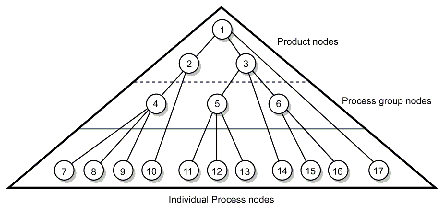
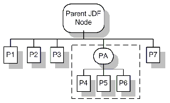
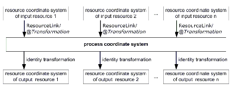
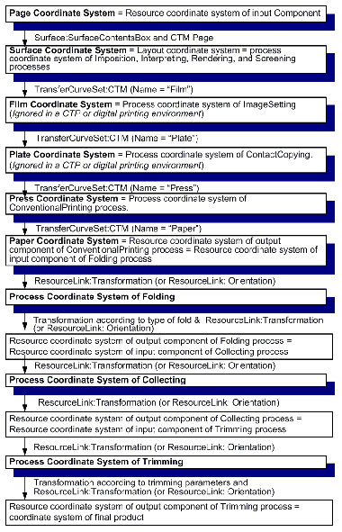
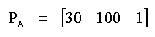
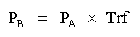
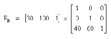
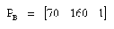

This chapter explains the basic aspects of JDF. It outlines the terminology that is used and is recognized by the format, and the components of a workflow necessary to execute a printing Job using JDF. Also provided is a brief discussion of JDF Process structure and the role of messaging in a JDF Job.
This section defines unique terminology used in this specification for the Job and workflow components of JDF. Links to additional information is included for some terms.
This terminology describes how JDF is described conceptually and hierarchically.
A Job is the entirety of a JDF project. Each Job is organized in a tree structure containing all of the information needed to complete the intended project. The information is collected logically into what is called a Node . Each Node in the tree structure represents an aspect of the Job to be executed.
The Nodes in a Job are organized in a hierarchical structure that resembles a pyramid. The Node at the top of the pyramid describes the overall intention of the Job. The intermediate Nodes describe increasingly Process-oriented aspects of the Job, until the Nodes at the bottom of the pyramid each describe a single, simple Process. Depending on where in the Job structure a Node resides, it can represent a portion of the product to be created, one or many Processing steps or other Job Parts. For more information about Jobs and Nodes, see Section 3, “Structure of JDF Nodes and Jobs”.
An Element is a standard XML syntactic construct [XML] . (See also: Section 2.1.1.3, “Attributes”.) Elements that are subparts of other Elements are often referred to as Subelements. JDF Elements are represented by two kinds of data types: element and text element. The latter is abbreviated as telem. For more information about Elements, see Section 3.2, “JDF Node” .
An Attribute is a standard XML syntactic construct [XML] . (See also: Section 2.1.1.2, “Elements”.) Attributes are defined as various different data types, such as string , enumeration , dateTime and so on.
For more information about Attributes, see Section 3.2, “JDF Node” . Note that an Attribute with an empty (zero length) value string must not be specified except when its data type allows an empty string, (e.g., when not needed, optional Attributes are to be omitted rather than included as empty Attributes.)
The hierarchical JDF structure implies relationships between Nodes and Elements within a JDF tree structure. The terms used in this document to describe these relationships are defined below, and, in some cases, include a brief representation of the encoding that would express them.
< Parent >< Child /></ Parent >
There are two kinds of links in JDF: internal links and external links. Internal links are pointers to information that is located elsewhere in a JDF document. The data that is referenced by the link is located in a target Element. External links are used to reference objects that are outside of the JDF document itself, such as content files or color profiles. These objects are linked using standard URLs (Uniform Resource Locators).
JDF makes extensive use of links in order to reuse information that is relevant in more than one context of the Job. The same target can be referenced by multiple links. However, no link references more than one target.
The four components to create, modify, route, interpret and execute a JDF Job are known as Agents, Controllers, Devices and Machines. Overseeing the workflow created by these components is MIS or Management Information Systems. These five aspects of a JDF workflow are described in the sections that follow.
By defining these terms, this specification does not intend to dictate to manufacturers how to design, build or implement a JDF/JMF system. The intention is to name the component mechanisms needed for the interaction of actual components in a workflow during the course of a JDF Job. In practice, it is very likely that individual system components will include a mixture of the capabilities described in the following sections. For example, many Controllers are also Agents.
A Machine is any part of the workflow system designed to execute a Process. Most often, this term refers to a piece of physical equipment, such as a press or a binder, but it can also refer to the software components used to run a particular Machine. Computerized workstations, whether run through automated batch files or controlled by a human worker, are also considered Machines if they have no JDF interface.
The most basic function of a Device is to execute the information specified by an Agent and routed by a Controller. Devices must be able to execute JDF Node s and initiate Machine s that can perform the physical execution. The communication between Machines and Device s is not defined in this specification. Device s may , however, support JMF messaging in order to interact dynamically with Controllers.
Agent s in a JDF workflow are responsible for writing JDF. An Agent has the ability to create a Job, to add Node s to an existing Job, and to modify existing Nodes. Agent s can be software Processes, automated tools or even text editors. Anything that can be used in composing JDF can be considered an Agent.
Actual implementations of Device s or Controller s will most often be able to modify JDF. These system components have Agent properties in the terms of this specification.
Agent s create and modify JDF information; Controllers route it to the appropriate Device s . The minimum requirement of a Controller is that it can initiate Process es on at least one Device, or at least one other Slave Controller that will then initiate Process es on a Device. In other words, a Controller is not a Controller if it has nothing to control. In some cases, a pyramid-like hierarchy of Controllers can be built, with Controllers at the top of the pyramid controlling a series of lower-level Controllers at the bottom. The lowest-level Controllers in the pyramid, however, must have Device capability. Therefore, Controllers must be able to work in collaboration with other Controllers. In order to communicate with one another, and to communicate with Device s , Controllers must support the JDF file-exchange protocol and may support JMF. Controllers can also determine Process planning and scheduling data, such as Process times and planned production amounts..
The overseer of the relationships between all of the units in a workflow is known as Management Information Systems or MIS. MIS is, in effect, a macrocosmic Controller. It is responsible for dictating and monitoring the execution of all of the diverse aspects of the workflow. To do this, it must remain in contact with the actual production facilities. This can be accomplished either in real time using JMF messaging or post facto using the audit records within JDF.
To allow MIS to communicate effectively with the other workflow components, JDF supplies what is essentially a messenger service, in the form of JMF, to run between MIS and production. This format is equipped with a variety of Message types, ranging from simple, unidirectional notification to queries and even commands. System designers have a great deal of flexibility in terms of how they choose to use the messaging architecture, so that they can tailor the Processes to the capabilities of the existing workflow mechanism. The Figure 2-1 depicts how various communication threads can run between MIS and production.
JDF also provides system components the ability to collect performance data for each Node, which can then be passed on to a Job-tracking system for use by the MIS system. These data can be derived from the Messages that the Controller receives or from the audit records in the Job. (For more information on audits, see Section 3.11.3, “Abstract Audit” .) Alternatively, the completed Job can be passed to the Job accounting system, which examines the audit records to determine the costs of all the Processes in the Job.
An example of the interaction and hierarchical structure of the components considered in the preceding sections is shown in the following figure. Single arrows indicate unidirectional communication channels and double arrows indicate bidirectional communication.
JDF does not dictate that a workflow be constructed in any pre-specified way for it to be usable. On the contrary, its flexibility has allowed JDF to model existing custom solutions for the graphic arts, as well as those yet to be imagined. JDF is equally as effective with a simple system using a single Controller-Agent and Device as it is with a completely automated industrial press workflow with integrated pre- and postpress operations.
Because of workflow system construction in today’s industry, the principal subsection procedures of a printing Job--prepress, press and postpress--remain largely disconnected from one another. JDF provides a solution for this lack of unity. With JDF, a print Job becomes an interconnected workflow that runs from Job submission through trapping, RIPing, filmmaking, platemaking, inking, printing, cutting, binding, and sometimes even through shipping. JDF enables an architecture that defines the Process necessary to produce each intended result and identifies the Elements necessary to complete the Processes. All Processes are separated into Nodes, and the entire Job is represented by a tree of these Nodes. All of the Nodes taken together represent a desired printed product.
Each individual Node in JDF is defined in terms of inputs and outputs. The inputs for a Node consist of the Resources it uses and the parameters that control it. For example, the inputs in a Node describing the Process parameters for imaging the cover of a brochure might include requirements for trapping, RIPing, and imposing the image. The output of such a Node might be a raster image.
Unless they represent the absolutely final product, Resources that are produced by one Node are in turn modified or consumed by subsequent Nodes. Therefore, the output of the Process described above--the raster image--becomes one of the Input Resources for a Node describing the printing Process for the brochure. This Input Resource would be joined in the Node by other Input Resources such as inks, press Sheets, plates and a set of parameters that indicate how many Sheets to produce. The output would be a set of printed press Sheets that in turn would become the Input Resource for postpress operations such as folding and cutting. And so on until the brochure is completed.
This system of interlinked Nodes effectively unites the prepress, press and postpress Processes, and even extends the notion of where a Job begins. A JDF Job, like any printing Job, is defined by the original intent for the end product. The difference between a JDF Job and a generic printing Job, however, is that JDF allows the entire Job, from prepress through postpress, to be defined up front. All of the Resources and Processes necessary to produce an entire printed product can be identified and organized into Nodes before the first prepress Process is set in motion. Furthermore, the Product Intent specification can be extremely broad or extremely detailed, or anywhere in between. This means that a Job can be so well defined before production begins that the system administrator only has to set the wheels in motion and let the Job run its course. It might also mean that the person submitting the Job has only a general idea of what the final product will look like and that modifications to the intent will be made along the way, depending on the course of the Job.
For example, the person submitting the Job specification for the brochure described above might know that she wants 400 copies, that she wants it done on a four-color press with no spot colors, that the cover will be on a particular paper stock and the contents on another, that the binding will be stapled, and that she requires the Job in two weeks. Another person might know only that he wants the pages she’s designed to be put into some sort of brochure form, although she doesn’t know exactly what. Either person’s request can be translated into a JDF Product Intent Node that will eventually branch into a tree structure describing each Process needed to complete the brochure. In the first example, the prepress, press and postpress Processes will be well defined from the start. In the second example, information will be included as it is gathered. The following sections describe the way in which Nodes can combine to form a Job.
JDF Jobs consist of a set of Nodes that specify the production steps needed to create the desired end product. The Nodes, in addition to being connected through inputs and outputs, are arranged in a hierarchical tree structure. Figure 2-2, below, shows a simple example of a tree of Nodes.
|

|
The following table provides a hypothetical breakdown of the Nodes in the tree structure shown above.
The uppermost Nodes (1, 2, & 3) represent the Product Intent in general terms. These Nodes describe the desired end product and the components of that product, which, in this case, are the cover and the content pages. As the tree branches, the information contained within the Nodes gets more specific. Each Subnode defines a component of the product that has a unique set of characteristics, such as different media, different physical size or different color requirements. The Nodes that occur in the middle of the tree (4, 5, & 6) represent the groups of Processes needed to produce each component of the product. The Nodes that occur closest to the bottom of the tree (7-17) each represent individual Processes.
In this example, there are two subcomponents of the Job, the cover and the contents, each with distinct requirements. Therefore, two Nodes--Nodes 2 and 3--are needed to describe the elements of the Job in broad terms. Within the content pages there are some black-and-white pages and some color pages. Since fabricating each requires a different set of Processes, further branching is necessary. The following table arranges the Nodes in groups according to the Processes they will be executing.
This hierarchical structure is discussed in more detail in the following section.
Output Resources of JDF Nodes are often the Input Resources for other JDF Nodes. Nodes must not begin executing until all of their Input Resources are complete and available. This means that the Nodes execute in a well defined sequence. One Process follows the next. For example, a Process for making plates will produce, as Output Resources, press plates that are needed by a ConventionalPrinting Process.
In the hierarchical organization of a JDF Job, Nodes that occur higher in the tree represent high level, more abstract operations, while lower Nodes represent more detailed Process operations. More specifically, Nodes near the top of the tree can represent only intent regarding the components or assemblies that make up the product, while the leaf Nodes provide explicit instructions to a Device to perform some operation. Figure 2-3 shows an example of a hierarchical structure.
|

|
In addition to the hierarchical structure of the Node tree, sibling Nodes are linked in a Process chain by their respective Resources. In other words, an Output Resource of one Node ends up representing the Input Resource of the following Node (as represented in Figure 2-4). This interrelationship is known as Resource linking.
With Resource linking, complex networks of Processes can be formed. The Figure 2-4 displays an alternate representation of the Process described in Figure 2-3. Whereas Figure 2-3 represents a hierarchical structure, Figure 2-4 shows an example of the linking mechanism of the same Job. Note that there are many possible Process networks that map to the same Node hierarchy.
In the JDF specification, the linking of Processes is not explicitly specified. In other words, Nodes are not arranged in an abstract chronology, dictating, for example, that the trapping Node is to come before the RIPing Node. Rather, the links are implicitly defined in the exchange of input and Output Resources. Resource dependencies form a network of Processes, and the sequence of Process execution--that is, the routing of Processes--can be derived from these dependencies. One Resource dependency might have the possibility of multiple Process routing scenarios. It is up to MIS to define the proper solution to meet local constraints. Note that the type of exchange Resource effectively limits the Processes that can be linked.
The Agent or set of Agents employed by MIS to write the JDF Job must be familiar with these local constraints. They must take into account factors such as the control abilities of the applications that complete the prepress Processes, the transport distance between the prepress facility and the press itself, the load capabilities of the press, and the time requirements for the Job. All of the factors taken together build a Process network representing the workflow of production. To aid Agents in defining the workflow, JDF provides the following four different and fundamental types of Process routing mechanisms, which can be combined in any way.
These mechanisms are discussed in greater detail in Section 4.3, “Execution Model”.
Whereas JDF provides a container to define a Job, the Job Messaging Format -- JMF, defined in Chapter 5, JDF Messaging with the Job Messaging Format -- provides a method to generate snapshots of Job status and to interactively manipulate elements of a workflow system.
JMF is specifically designed for communication between the production system Controller and the work centers or Devices with which it interacts. It provides a series of queries and commands to check the status of Processes and, in some cases, to dictate the next course of action. For example, the KnownDevices Query Message allows the Controller to determine what Processes can be executed by a particular Device or Work Center. These Processes are likely to be determined at system initialization time. The SubmitQueueEntry Message provides a means for the Controller to submit a Job ticket to individual work centers or Devices. And the Status , Resource and Occupation Messages allow the Device or Work Center to communicate quasi real-time1 processing status to a Controller. Depending on the system configuration, the Message handler can choose to record status changes in the history logs. The status Message allows the Controller to request status updates from the Controller.
JDF also provides mechanisms to define recipients for individual Messages on a Node-by-Node basis. This enables Controllers to define the aspects and the parts of Jobs that they want to track. For more information about messaging, see Chapter 5, “JDF Messaging with the Job Messaging Format”.
This chapter explains how coordinate systems are defined and used in JDF. It also shows how the matrices are used to specify a certain transformation and how these matrices can be used to transform coordinates from one coordinate system to another coordinate system. In addition, it clarifies the meaning of terms like Top or Left .
During the production of a printed product it often happens that one object is placed onto another object. During imposition, for example, single pages and marks (like cut, fold or register marks) are placed on a Sheet surface. Later, at image setting, a bitmap containing one separation of a Sheet surface is imposed on a piece of film. In a following step, the film is copied to a printing plate which then is mounted on a press. In postpress, the printed Sheets are gathered on a pile. The objects involved in all these operations have a certain orientation and size when they are put together. In addition, one has to know where to place one object on the other.
The position of an object (e.g., a cut mark) on a plane can be specified by a two-dimensional coordinate. Every digital or Physical Resource has its own coordinate system. The origin of each coordinate system is located in the lower left corner, (i.e., the X coordinate increases from left to the right, and the Y coordinate increases from bottom to top.)
Each page contained in a PDL file has its own coordinate system. In the same way a piece of film or a Sheet of paper has a coordinate system. Within JDF each of these coordinate systems is called Resource coordinate system .
If a Process has more than one Input Resource with a coordinate system, it is necessary to define the relationship between these input coordinate systems. Therefore, a process coordinate system is defined for each Process. JDF tickets are written assuming an idealized Device that is defined in the process coordinate system for each Process that the Device implements. A real Device must map the idealized process coordinate system to its own device coordinate system.
The coordinate systems of the Input Resources are mapped to the process coordinate system. Each of those mappings is defined by a transformation matrix, which specifies how a coordinate (or position) of the input coordinate system is transformed into a coordinate of the target coordinate system. (See Section 2.5.6, “Homogeneous Coordinates” for mathematical background information.) In the same way, the mapping from the process coordinate system to the coordinate systems of the Output Resources is defined. The process coordinate system is also used to define the meaning of terms like Top or Left , which are used as values for parameters in some Processes.
|

|
It is important that no implicit transformations (such as rotations) are assumed if the dimensions of the Input Resources of a Process do not match each other. Instead every transformation (e.g., a rotation) must be specified explicitly by using the Orientation or Transformation Attribute of the corresponding ResourceLink . The same applies also to other areas in JDF, (e.g., the LayoutPreparation Process). A FitPolicy Element MAY define a policy for implied transformations.
The source coordinate system of a referenced object is defined by the lower left of the object. X values are increasing to the right, Y values are increasing towards the top. In case of PDF the lower left of the MediaBox defines the lower left of the source coordinate system.
Note: some object coordinate systems have optional tags to indicate internal transformations. These internal transformations MUST be applied prior to defining the source coordinate system; for instance:
|
(Order of elements is “lower-left x, lower-left y, upper-right x, upper-right y” or “left, bottom, right, top”.) |
|
|
(The ordering of elements is defined in Section 2.5.6, “Homogeneous Coordinates”.) |
|
Coordinates and transformations are used throughout JDF, to include:
Each physical Input Resource, (e.g., Component ), of a Process has, by default, its own coordinate system, which is called the “resource coordinate system.” The coordinate system also implies a specific orientation of that Resource . On the other hand there is a coordinate system that is used to define various Process-specific parameters. This coordinate system is called a target or process coordinate system.
It is often necessary to change the orientation of an Input Resource before executing the operation. This can be done by specifying a transformation matrix. It is stored in the Orientation or Transformation Attribute of the ResourceLink . This provides the ability to specify different matrices for the individual Resources of a Process. For details on ResourceLink Elements, see the section Section 3.9, “ResourceLinkPool and ResourceLink” .
Combined Processes (see Section 3.3.3, “Combined Process Nodes” ) combine multiple individual Processes and thus also the Processes respective coordinate systems. The process coordinate systems are not modified by the fact that the Processes are part of a Combined Process, they are identical to the process coordinate systems of the Processes, were they defined in a linked chain of individual Processes. The coordinate systems of an exchange Resource can be modified by defining it as a pipe by specifying Resource /@ PipeID and Resource /@ PipeProtocol = "Internal" . (See Section 4.3.3, “Overlapping Processing Using Pipes” ) and linking it to the Combined Process with both an input and output ResourceLink . The Input ResourceLink defines the coordinate transformation using the standard Transformation or Orientation Attributes. Resource /@ Status of the exchange Resource must be ”Complete” .
The following table shows some matrices that can be used to change the orientation of a Physical Resource . Most of the transformations require the X- ( w ) and the Y-dimension ( h ) of the Component as specified in the Dimensions Attribute. If these are unknown, it is still possible to define a general orientation in the Orientation Attribute of the ResourceLink . The naming of the Attribute reflects the state of the Resource and not necessarily the order of applied transformations. Thus Rotate90 and Flip90 specify that the original Y axis as represented by the spine is on top. In the case of Flip90 , the Component is additionally flipped front to back.
To illustrate the use of coordinate systems in JDF, a simple saddle stitched brochure with eight pages is used as an example in Table 2-5. The brochure is printed on two Sheets with front and back. The two Sheets are then folded, collected on a saddle, and saddle stitched. Finally the brochure is cut with a three-side trimmer.
|
RunList (of interpreted PDL data) |
||
|
RunList
(of interpreted PDL data) |
RunList (of rasterized byte maps) |
|
|
RunList (of rasterized byte maps) |
RunList (of bit maps) |
|
|
ImageSetterParams
|
ImageSetting (to film) |
ExposedMedia (of film) |
|
ExposedMedia (of film) |
ExposedMedia (of plate) |
|
|
ExposedMedia
(of plate) |
||
At imposition, the layout describes a Signature with two Sheets, each having a front and a back surface. On each surface, two content objects, (i.e., pages, are placed.)
Each surface has its own coordinate system, in which a surface contents box is defined. This coordinate system is also referred to as the Layout coordinate system because the Signature, Sheet and surface elements are defined within the hierarchy of the Layout Resource by means of Partitioning. The content objects are placed by specifying the CTM Attribute relative to the surface contents box. If the position of an object within a page is given in the page coordinate system, this coordinate can be transformed into a position within the surface coordinate system:
|
PSurface = PPage X CTMPage + [SurfaceContentsBoxXlowerleft SurfaceContentsBoxYlowerleft 0] |
Please note, that the width and height of the surface NEED NOT be known at this point.
The Sheet coordinate system is identical with the coordinate system of the front surface. This means that no transformation is needed to convert a coordinate from one system to the other. Instead, the coordinates are valid (and equal) in both coordinate systems. The relation between the coordinate system of the front and the back surfaces depends on the value of the Layout /@ LockOrigins Attribute. The Sheet coordinate system is also identical with the Signature coordinate system, which in turn is identical with the coordinate system of the Imposition Process.
The Output Resource of the Imposition Process is a run list. Each Element of the run list has its own coordinate system, which is identical with the corresponding Signature coordinate system. The interpretation, rendering and screening Processes do not affect the coordinate systems. This means that the coordinate systems of all these Processes are identical.
At the image setting Process, the digital data is set onto film. The process coordinate system is defined by the media Input Resource. The width and height of the media are defined in the Media /@ Dimension Attribute. The position of the Signatures (as defined by the run list Input Resource) on the film is defined by the ImageSetterParams /@ CenterAcross Attribute.
The coordinate system of the conventional and digital printing Processes is called press coordinate system . It is defined by the press: the X-axis is parallel to the press cylinder, and the Y-axis is going along the paper travel. Y = 0 is at begin of print, X = 0 is at the left edge of the maximum print area. The Front side of the press Sheet faces up towards the positive Z-axis. The relationship between the layout coordinate system and the press coordinate system is defined by the CTM Attributes of the corresponding TransferCurveSet Elements located in the TransferCurvePool .
The output of the printing Process (e.g., a pile of printed Sheets) is described as a Component Resource in JDF. The coordinate system of the printed Sheets is defined by the transformation given in the TransferCurveSet / CTM Attribute (where Name = "Paper" ).
Each of the two Sheets is folded in a separate folding Process. In this example, the orientation of the Sheets is not changed before folding. This can be specified by setting the Orientation Attribute of the Input Resource to Rotate0 or by setting the Transformation Attribute to "1 0 0 1 0 0" . The folding Process changes the coordinate system. In this example the origin of the coordinate system is moved from the lower left corner of the flat Sheet (input) to the lower left corner of the folded Sheet (output), (i.e., it is moved to the right by half of the Sheet width.)
The two folded Sheets are now collected. In this example, the orientation of the folded Sheets is not changed before collecting. This can be specified by setting the Orientation Attribute of the Input Resource to Rotate0 or by setting the Transformation Attribute to "1 0 0 1 0 0" . The collecting Process does not change the coordinate system.
The two collected and folded Sheets are now trimmed to the final size of the simple brochure. In this example, the orientation of the collected and folded Sheets is not changed before trimming. This can be specified by setting the Orientation Attribute of the Input Resource to Rotate0 or by setting the Transformation Attribute to "1 0 0 1 0 0" . The trimming Process changes the coordinate system: the origin is moved to the lower left corner of the trimmed product.
In looking at the whole production Process, a series of coordinate systems is being involved. The relationship between the separate coordinate systems is specified by transformation matrices. This allows transformation of a coordinate from one coordinate system to another coordinate system. As an example, note the position of the title on page 1 of the product example in Figure 2-13. By applying the first transformation, this position can be converted into a position of the surface (or layout) coordinate system. This position can then be converted into the paper coordinate system by applying (in this order) the Film , Plate , Press and Paper transformations stored in the TransferCurvePool .
From now on in the workflow, every Process is using components as input and Output Resources. The ResourceLink of each input and output component contains a Transformation Attribute or an Orientation Attribute. The Transformation Attribute is to be used if the width and the height of the component are known or a non-orthogonal rotation is needed. Otherwise the Orientation Attribute is to be used to specify a change of the orientation, (e.g., an orthogonal rotation).
Since the folding Process changes the coordinate system depending on the fold type, the transformations specified in the ResourceLink Elements are not sufficient to transform a position given in the paper coordinate system to a position in the coordinate system of the folded Sheets, (i.e., the resource coordinate system of the output component of the folding Process.) An additional transformation depending on the fold type and details of the individual folds has to be applied. The corresponding transformation matrix is not explicitly specified in the JDF file.
The collecting Process does not change the coordinate system. Therefore, only the transformations specified in the ResourceLink Elements of the input and Output Resources, (i.e., components, have to be applied.)
The trimming Process again changes the coordinate system depending on the trimming parameters. Therefore, a transformation depending on the trimming parameters has to be applied in addition to the transformations specified in the ResourceLink Elements. The matrix for the additional transformation (depending on the trimming parameters) is not explicitly specified in the JDF file.
After having applied all transformations mentioned above, the resulting coordinate specifies the position of the title in the coordinate system of the final product.
|

|
The following rules summarize the use of coordinate systems in JDF.
A convenient way to calculate coordinate transformations in a two-dimensional space is by using so-called homogeneous coordinates. With this concept, a two-dimensional coordinate P=(x,y) is expressed in vector form as [x y 1]. The third element “1” is added to allow the vector being multiplied with a transformation matrix describing scaling, rotation, and translation in one shot. Although this only requires a 2*3 matrix (e.g., as it is used in PostScript) in practice 3*3 matrices are much more common, because they can be concatenated very easily. Thus, the third column is set to "0 0 1" .
In this example, the position P given in the coordinate system A is transformed to a position of coordinate system B. The relationship between the two coordinate systems is given by the transformation matrix Trf
|

|
|
|

|
|
|

|
|
|

|